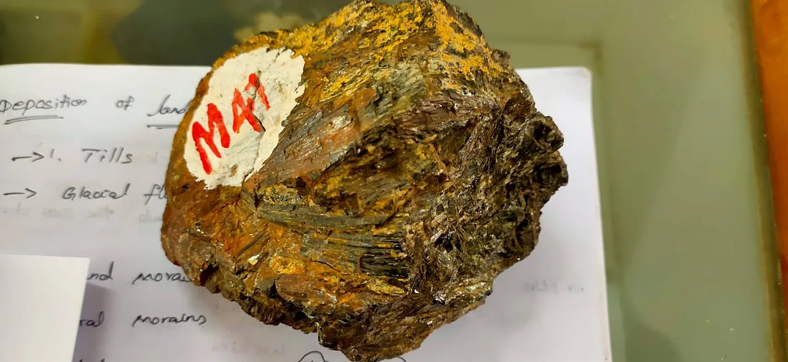
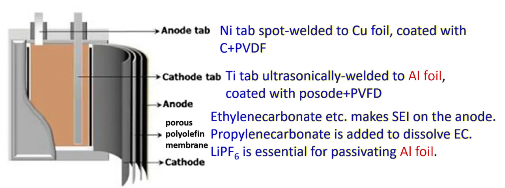
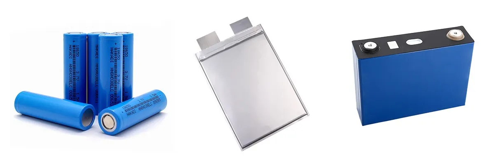
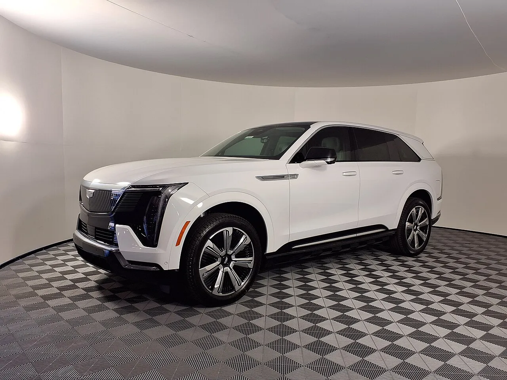
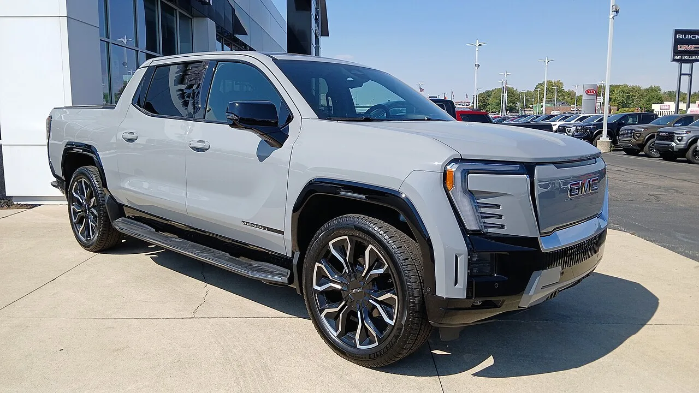
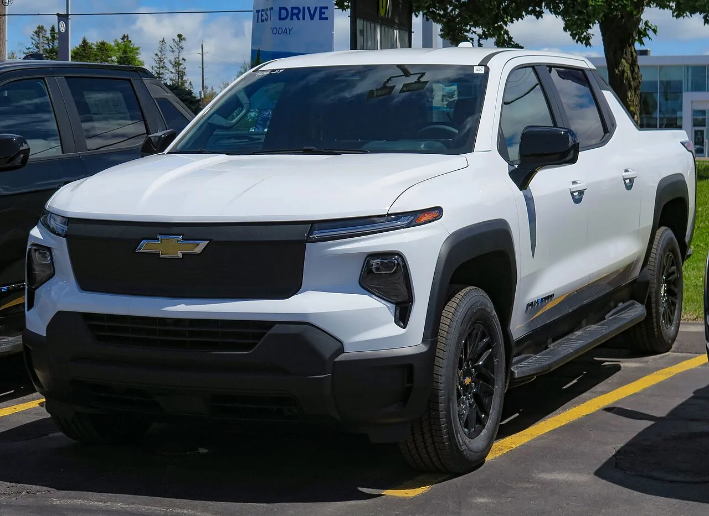
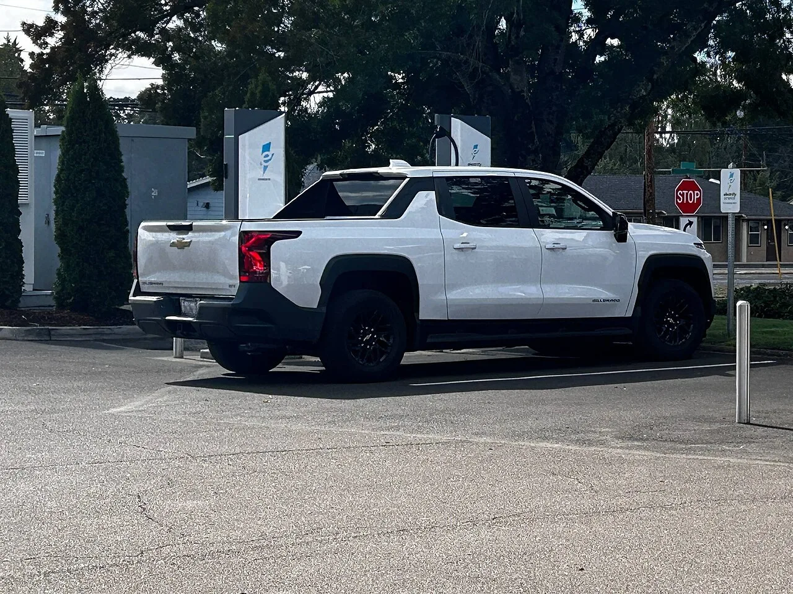

▲ 쉐보레 실버라도 EV(현행 모델, 참고 사진) ⓒ Chevrolet Canada (Wikimedia Commons, CC BY 3.0)
"LFP만큼 싸면서 에너지밀도는 33% 높다." GM과 LG에너지솔루션의 합작사 얼티엄셀즈(Ultium Cells)가 미국에서 저가형 LMR(리튬·망간 리치) 각형 배터리 양산 라인을 만든다고 9월 말 밝혔다. 지피코리아는 10월 1일 이 소식을 로이터·블룸버그 보도를 인용해 "LFP만큼 싸고 성능 우수"라는 제목으로 전했다. 먼저 짚을 점이 있다. 이번 LMR 라인은 테네시주 스프링힐(Spring Hill) 공장에 들어선다. 얼티엄셀즈의 오하이오 워런 공장은 기존 NCMA 파우치 셀을 만드는 곳이다. 이 글은 보도와 GM 공식 자료, 한국·해외 매체를 교차해 LMR이 무엇이고, 수치가 어디까지 확인되며, 한국 배터리 산업에 어떤 의미인지를 정리했다.
1. LMR이란 무엇인가 — NCM과 LFP 사이
배터리 양극재는 코발트·니켈·망간 같은 금속에 따라 성격이 갈린다. GM 공식 자료에 따르면 이 중 코발트가 가장 비싸고, LMR 셀은 상대적으로 저렴한 망간 비중을 높이면서 더 큰 용량과 에너지밀도를 낸다. 지피코리아는 니켈 비율이 기존 85%에서 35%로 낮아지고 망간이 65%까지 높아진다고 전했다(기사 인용이며, 이 정확한 비율은 공식 자료에서 직접 확인하지 못했다). 디일렉은 망간 함량이 60~65%라고 전했다. 참고로 IEEE Spectrum(2025년 7월)은 BYD 블레이드 LFP가 리터당 약 350Wh, GM 얼티엄 배터리가 리터당 600Wh 이상이라고 소개했다(부피 기준 참고치이며 LMR 셀 자체의 수치는 아니다).

▲ 망간 광석 표본. LMR은 양극재에서 망간 비중을 높여 코발트·니켈 의존을 줄이는 방식이다(배터리 소재 자체를 찍은 사진은 아니며 설명용 참고 사진) ⓒ கவிக்குமார் ப (Wikimedia Commons, CC BY-SA 4.0)
| 구분 | NCM/NCMA(하이니켈) | LFP | LMR |
|---|---|---|---|
| 주 소재 | 니켈·코발트·망간(·알루미늄) | 철·인산염(코발트·니켈 없음) | 망간 비중 높음, 코발트 최소 |
| 에너지밀도 | 높음 | 상대적으로 낮음 | LFP 대비 33% 높다는 것이 GM·LGES 주장 |
| 원가 | 비쌈(코발트·니켈) | 저렴 | LFP와 "비슷한 수준"이라는 주장(구체 수치 없음) |
| GM 내 위치 | 현행 트럭·SUV 주력 | 보급형 보완 | 트럭·대형 SUV용 신규 축 |
핵심은 LMR이 "LFP급 원가에 NCM에 더 가까운 주행거리"를 노린다는 점이다. 다만 GM은 2026년 9월 29일 공식 게시글에서 "하이니켈 배터리가 포트폴리오에서 계속 가장 긴 주행거리를 제공할 것"이라고 밝혔다(GM Authority도 같은 취지로 전했다). 즉 LMR이 하이니켈을 완전히 대체한다는 뜻은 아니다. 구체적인 Wh/kg 수치는 이번에 확인한 자료에 없었다(확인 못 함).
2. 어디서, 언제 만드나 — 테네시 스프링힐
얼티엄셀즈는 테네시주 스프링힐 공장에서 각형(prismatic) LMR 셀을 생산한다. 얼티엄셀즈 공식 발표에 따르면 설비 개조는 올해 말 시작해 2028년 완료될 예정이다(서울경제 영문판·디일렉도 같은 일정을 전했다). GM 발표는 얼티엄셀즈가 세계 최초로 LMR 셀을 상업 생산하는 업체가 될 것으로 기대된다는 내용이다.
| 시점 | 내용 | 출처 |
|---|---|---|
| 2024년 12월 | 양사 공동개발 계약 체결 | 서울경제 영문판 |
| 2025년 5월 | LMR 각형 셀 상용화 계획 공개, 2027년 말 LGES 시설에서 시생산·2028년 미국 양산 목표 | GM 보도자료 |
| 2026년 3월 | LG엔솔, 인터배터리 2026에서 LMR 배터리 공개 | 서울경제 영문판 |
| 2026년 6월 | 스프링힐에서 LG에너지솔루션 버텍(ESS) 고객용 LFP 셀 생산 시작 | 얼티엄셀즈 보도자료 |
| 2026년 9월 말 | 스프링힐 LMR 각형 셀 생산 전환 공식 발표(10억 달러·신규 500명) | 얼티엄셀즈·GM·테네시주 |
| 2026년 말 | 스프링힐 설비 개조 착수 | 얼티엄셀즈·GM |
| 2028년 | 공장 개선 완료·양산 준비, GM 차량 탑재는 2028년부터로 보도 | 얼티엄셀즈·electrive·디일렉 |

▲ 리튬이온 셀 내부 구조(탭·분리막·전극)를 설명한 일반 도식. 이번 LMR 셀이나 각형 셀의 실제 설계도가 아닌 참고 이미지다 ⓒ ArcturusNotTaurus (Wikimedia Commons, CC BY-SA 4.0)

▲ 리튬이온 셀의 세 가지 폼팩터(왼쪽부터 원통형·파우치형·각형). LMR 라인은 이 중 각형(오른쪽)이며, 설명용 일반 사진이다 ⓒ CRBAman (Wikimedia Commons, CC BY-SA 4.0)
디일렉에 따르면 스프링힐은 현재 파우치형 NCM 셀(전기차용)과 LFP 셀(에너지저장장치용)을 만들고 있다. 여기에 각형 LMR이 더해지면 한 공장에서 여러 화학계·여러 폼팩터를 생산하는 구도가 된다. 얼티엄셀즈의 다른 공장인 오하이오주 워런은 2022년 8월 셀 생산을 시작해 대형 NCMA 파우치 셀을 만든다(현지 보도). 스프링힐은 2024년 3월 첫 셀 출하(GM Authority) 이후 이번에 LMR이 더해지는 것이다. 이번 LMR 발표에서 워런 공장의 역할 변화는 확인하지 못했다.
3. 어떤 차에 언제 들어가나
GM은 LMR을 전기 트럭과 풀사이즈 SUV에 우선 적용한다고 밝혀 왔다. GM의 2025년 5월 보도자료는 현재 하이니켈 화학계로 세그먼트 최고 수준 주행거리를 내는 GM 전기 트럭 플랫폼에 LMR과 각형 셀의 제조·공간 효율을 합치면, 전기 트럭에서 400마일(약 643km) 이상을 제공하면서 오늘의 하이니켈 팩보다 팩 원가를 상당히 낮추는 것을 목표로 한다고 설명했다(원문 표현은 "aims to offer"). 같은 자료에서 GM 배터리 담당 부사장 커트 켈티는 LMR이 하이니켈·인산철 솔루션을 "보완(complement)"해 트럭과 풀사이즈 SUV 시장에서 고객 선택권을 넓힐 것이라고 말했다. 400마일 목표는 SUV가 아니라 "전기 트럭"에 붙은 문구라는 점도 구분해 읽어야 한다.

▲ 캐딜락 에스컬레이드 IQ(현행 모델). GM이 LMR 대상으로 언급한 "풀사이즈 SUV"급 전기차의 예시 사진이며 LMR 탑재가 확정된 모델은 아니다 ⓒ HJUdall (Wikimedia Commons, CC0)
🔎 차종·시기에 대해 확인한 것과 못 한 것
· 확인: GM 대형 전기 트럭·풀사이즈 SUV 대상, 첫 탑재 전기차 2028년 예정(보도)
· 확인 못 함: 구체 차종명(실버라도 EV·시에라 EV·캐딜락 등), 트림, 가격, 탑재 팩 용량
· 400마일은 "목표(aims)"이며 EPA 인증값이 아니고, 2025년 자료에서는 "전기 트럭" 기준이다

▲ GMC 시에라 EV 드날리(현행 모델). GM의 대형 전기 픽업 계열 참고 사진으로 LMR 탑재가 확정된 모델은 아니다 ⓒ Deathpallie325 (Wikimedia Commons, CC BY-SA 4.0)
4. "33%"와 "LFP 수준 원가" — 누가 말했고 어디까지 믿을 수 있나
"에너지밀도 33% 향상"은 GM이 2025년 5월 보도자료에서 "최고 성능의 LFP 셀 대비 33%"라고 밝힌 수치로, 원가는 "comparable(비슷한 수준)"이라고 했다. 2026년 9월 발표에서도 반복됐는데, 얼티엄셀즈 보도자료는 "33% 높은 에너지밀도를 낼 잠재력(potential)이 있다", GM 게시글은 "그렇게 설계됐다(designed to)"는 표현을 써 단정형은 아니다. 두 수치 모두 양사 자체 주장이며, 이번에 확인한 자료에서 제3자 검증이나 공개 시험 조건은 찾지 못했다.

▲ 쉐보레 실버라도 EV 4WT(현행 모델). GM은 이 전기 트럭 플랫폼이 현재 하이니켈 화학계를 쓴다고 설명하며, 400마일 목표는 LMR과 각형 셀을 합친 향후 전기 트럭 기준이다 ⓒ Elise240SX (Wikimedia Commons, CC BY-SA 4.0)
| 주장 | 출처 | 한계 |
|---|---|---|
| LFP 대비 에너지밀도 +33% | GM 보도자료(2025.5·2026.9), 얼티엄셀즈 | "최고 성능 LFP 셀" 기준, 측정 조건 미공개 |
| 원가 LFP와 비슷 | GM·LGES | kWh당 가격 같은 수치 없음. 양산 수율에 좌우됨 |
| 400마일 이상 | GM 보도자료 | 목표치, 차종·팩 용량 미공개 |
| 모듈 부품 75%·팩 부품 50% 감소 | 지피코리아, IEEE Spectrum(2025.7, GM 설명) | 각형 대형 셀 적용에 따른 부품 감소 설명이며 GM 보도자료 원문에는 없음 |
| 팩 제조원가 약 6,000달러 절감 | IEEE Spectrum(2025.7, GM 임원 추정) | 임원 개인 추정이며 공식 수치 아님. 기준 차종·시점 미공개 |
| 수명은 현행 NCMA(8년·10만 마일 보증) 수준 목표 | IEEE Spectrum(2025.7, GM 엔지니어 쿠샬 나라야나스와미) | "자신한다"는 발언이며 검증 데이터 아님 |
| 40Ah 셀 약 900회 후 초기 에너지 92.2% 유지 | 서울경제 영문판(Nature Communications 논문 인용) | 실험실 대형 셀(40Ah급) 시험이며 실차 수명과는 다름 |
LMR이 지금까지 상용화되지 못한 이유로 지적돼 온 것은 전압 감소(voltage fade)와 용량 저하다. 디일렉은 양사가 10년 넘게 표면 코팅·도핑 기술로 초기 효율 손실과 전압 열화를 해결했다고 전했고, GM은 이 문제를 풀었다고 주장한다. IEEE Spectrum에 따르면 GM은 전용 도펀트·코팅(알루미늄·텅스텐·붕소 등 후보)과 입자 설계, 공정 혁신으로 전압 감쇠를 잡았다고 설명한다. 그러나 양산 후 장기 내구성(수년 사용 후 성능)은 아직 현장에서 검증된 적이 없다. 이것이 이번 발표에서 가장 중요한 불확실성이다.
✅ 수치를 읽을 때
· "LFP만큼 싸다"는 목표이지 2028년 판매가가 아니다(원자재 가격·수율에 따라 달라질 수 있음)
· 33%는 셀 단위 주장으로 보이며(필자 해석), 팩 단위·실주행거리 향상률과는 다르다
· 주행거리 향상 %(예: "몇 % 늘어난다")는 공식 자료에서 확인하지 못했다
5. 한국 배터리 산업에 주는 의미 — LG엔솔의 포트폴리오
LG에너지솔루션은 2010년 LMR 첫 특허를 냈고 2026년 중반까지 300건 이상을 출원했다(서울경제 영문판). GM의 2025년 자료는 LGES가 이 분야 세계 최대 LMR 특허 포트폴리오(2024년 말 IP5 기준 출원 200건 이상)를 가졌다고 소개했다. 이번 발표로 LG엔솔은 미국 현지에서 NCMA 파우치(워런)·LFP(스프링힐 ESS용)·LMR 각형까지 세 갈래를 갖추게 된다.

▲ 급속충전기 앞의 쉐보레 실버라도 EV(후면 3/4). 대형 전기 트럭에서는 배터리 원가와 주행거리가 가격 경쟁력을 좌우한다 ⓒ ITakePhotosOfCars (Wikimedia Commons, CC0)
경쟁 구도는 LFP 쪽에서 더 분명하다. 한국 업체들이 중국 CATL 등이 장악한 LFP 시장을 추격하는 동안, 같은 저가 시장에서 성능 우위가 있는 다른 화학계로 승부하려는 시도로 읽을 수 있다(필자 해석). 포드도 2025년 4월 자체 LMR 개발을 공개했고, 포드 전동 파워트레인 엔지니어링 책임자 찰스 푼이 "LMR은 서구권의 LFP가 될 것"이라고 말했다(해외 매체 보도). 완성차 쪽 관심이 크다는 신호지만 포드의 구체 양산 시점은 이번에 확인하지 못했다. 점유율로 보면 SNE리서치 집계(CnEVPost 인용) 2026년 상반기 글로벌 전기차 배터리 사용량 608.5GWh 중 CATL이 39.9%, LG에너지솔루션이 8.6%(52.6GWh, 3위)였고 상위 10곳 중 7곳이 중국 업체(합산 72.4%)였다. 이는 화학계 구분이 없는 전체 수치여서 LFP만의 점유율이나 중국 업체의 LMR 대응 수준은 확인 못 함으로 둔다.
현대차의 배터리 전략과 비교하려면 현대차 미드니켈 NCM 배터리 기사를, GM의 전기차 재정 부담은 GM 60억 달러 청구서 기사를, 배터리 가격 흐름은 배터리 팩 가격 기사를 참고할 수 있다. 중국 쪽 저가 대안은 CATL 나트륨이온 양산 기사에 정리했다.
원문 보도와 GM 공식 자료는 아래에서 확인 가능하다.
지피코리아 원문 바로가기 GM 2025.5 보도자료 바로가기 얼티엄셀즈 2026.9 발표 바로가기 GM 2026.9 게시글 바로가기
6. 앞으로 지켜볼 것
| 항목 | 왜 중요한가 | 현재 상태 |
|---|---|---|
| 실차 내구성 | 전압 감소·용량 저하가 상용화 걸림돌이었음 | 해결했다는 주장만 있음, 양산 데이터 없음 |
| 양산 수율·원가 | LFP급 원가 약속이 지켜져야 의미 있음 | 확인 못 함 |
| 탑재 차종·가격 | 소비자가 체감하는 지점 | 2028년 예정, 차종 확인 못 함 |
| 투자 규모 | 출처에 따라 표기가 다름 | 1차 자료(얼티엄셀즈·테네시주)는 2030년까지 10억 달러(LFP·LMR 합산). 20억 달러 표기는 7장 참고 |
| 망간 공급망 | 망간 수입 의존도 문제 | TNW는 유럽의 높은 수입 의존을 지적(미국 상황은 확인 못 함) |
7. 투자·고용 숫자, 이렇게 읽는다
"10억 달러"는 LMR 라인 하나의 공사비가 아니다. 얼티엄셀즈 보도자료는 2026년 6월 시작한 ESS용 LFP 셀 생산과 이번 LMR 프로그램, 설비 개선을 합친 투자액이 2030년까지 10억 달러에 이른다고 밝혔다. 테네시주 경제개발부(TNECD)도 같은 10억 달러를 발표했고, 부지사 스튜어트 맥워터는 "10억 달러 규모의 추가 투자"라는 취지로 환영했다. 일자리는 신규 500개이며 현재 인력 1,200명과는 별개다.
| 시점 | 투자 | 일자리 | 내용 |
|---|---|---|---|
| 2021년 4월 | 23억 달러 이상 | 1,300개 | GM·LGES, 스프링힐 공장 신설 발표 |
| 2022년 12월 | 2억 7,500만 달러 | 400개 추가(총 1,700개 계획) | 생산능력 35GWh→50GWh 확장 |
| 2026년 9월 | 10억 달러(2030년까지, LFP·LMR·설비 합산) | 500개 신규(현재 1,200명) | LMR 각형 셀 생산 전환, 2028년 완료 목표 |
한편 해외 매체 CleanTechnica(2026년 9월 29일)는 GM이 "LFP와 LMR 투자가 2030년까지 합쳐 20억 달러"라고 밝혔다고 썼다. 그러나 얼티엄셀즈 보도자료, GM 공식 게시글, 테네시주 발표, 한국 언론(헤럴드경제·글로벌이코노믹 등)은 모두 10억 달러로 적었고, 필자가 확인한 1차 자료에서는 20억 달러 문구를 찾지 못했다. 오기이거나 합산 범위가 다른 수치일 가능성이 있으나(추정), 이 글은 1차 자료의 10억 달러를 기준으로 삼는다.
🔎 숫자를 인용할 때 주의할 점
· "LMR에 10억 달러"가 아니라 "LFP·LMR·설비 개선 합산 10억 달러"
· 일자리 500개는 신규이며 총 인원은 약 1,700명이 되는 셈(1,200+500, 필자 계산)
· 세제 혜택·보조금 규모는 이번 발표에서 확인하지 못했다
8. 독자가 궁금해할 만한 것들
| 질문 | 현재까지의 답 |
|---|---|
| LMR 전기차는 언제 살 수 있나? | GM 차량 탑재는 2028년부터로 보도됐다. 차종·가격·한국 출시 여부는 발표에 없다(확인 못 함). |
| 하이니켈 배터리는 사라지나? | 아니다. GM은 하이니켈이 계속 가장 긴 주행거리를 담당하고 LMR은 "오늘의 더 저렴한 화학계를 뛰어넘는" 중간 축이라고 밝혔다. |
| LFP 차보다 싸질까? | LFP와 "비슷한 원가"가 목표다. 판매가는 수율·원자재 가격·차급에 따라 달라지므로 현재로선 알 수 없다. |
| 오래 써도 괜찮을까? | 실험실 40Ah 셀 약 900회 후 92.2%라는 결과와 GM 엔지니어의 "현행 NCMA 수준" 자신감만 있고, 실차 장기 데이터는 없다. |
| 한국 업체에 호재인가? | 다중 화학 공장 구도는 분명하나, 매출·수익 기여 규모는 공개되지 않았다. 이 글은 투자 판단 자료가 아니다. |
9. 요약
GM·LG엔솔 합작 얼티엄셀즈가 테네시 스프링힐 공장을 개조해 각형 LMR 셀을 만든다. 설비 전환은 2026년 말 시작, 2028년 완료 목표이며 첫 탑재 전기차는 2028년으로 보도됐다.
"LFP 수준 원가에 에너지밀도 33% 높음"과 "400마일 이상"은 양사 주장·목표다. 독립 검증, Wh/kg 수치, 구체 차종·가격은 확인하지 못했고, 장기 내구성이 최대 변수다.
LG엔솔은 NCMA·LFP·LMR을 한 공장에서 갖추는 다중 화학 전략을 택했다. 투자액 10억 달러는 LFP·LMR·설비 개선 합산(2030년까지)이며 신규 일자리는 500개다. SNE리서치 집계로 CATL은 2026년 상반기 글로벌 전기차 배터리의 39.9%, LG엔솔은 8.6%였지만 LFP 단독 점유율은 확인하지 못했다.